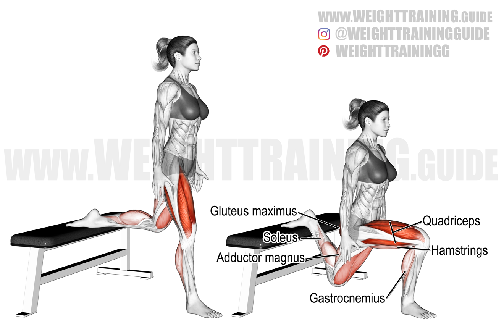
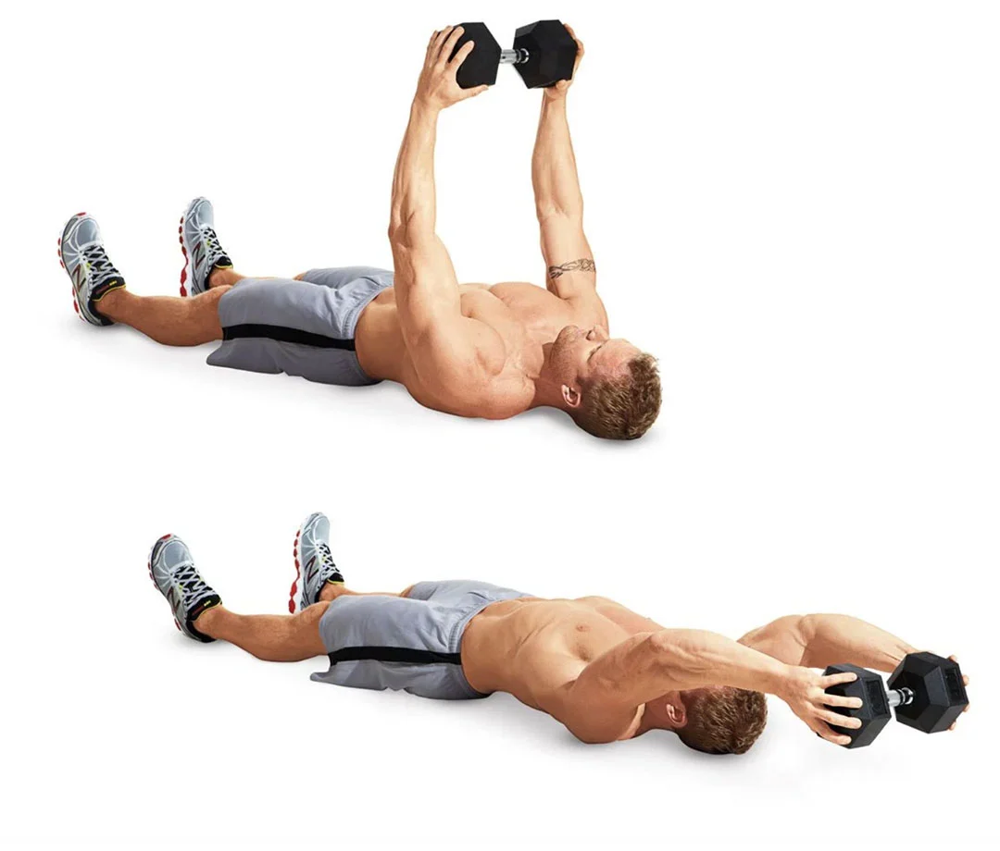

Gymming!
Why gym?
Due to the theory of progressive overload, when the household free weights at home became manageable for me, I moved on to gymming! The gym has a plethora of machine weights for you to choose from, and I find that using machines makes it easier for me to isolate the muscle groups that I want to strengthen during my workout. The gym also has heavier dumbbells that I can use. Since dumbbells are expensive, I prefer using dumbbells at the gym rather than buying dumbbells to use at home.
What are some gym exercises that I can follow?
I usually google images of gym exercises that I can follow, and look at my phone to follow these exercises in the gym. Here are some of the images that I use for dumbbell workouts:
 The machines usually have small images on them that teach you how to use the machine. You can adjust the weights by inserting the key into your desired weight. You can also adjust the position of the seat of the machine.
Here's a YouTube video of a person using a machine weight.
About Me

I was in Track and Field (sprints) for 4.5 years! However, I had to leave track to focus on my studies during A levels. Track trainings have helped me to foster my interest for exercising! I am happy to pick up this interest for exercising once again in University.
Contact Me
Click on the icons to drop me a message! I am always up for a chat about exercising 🏃